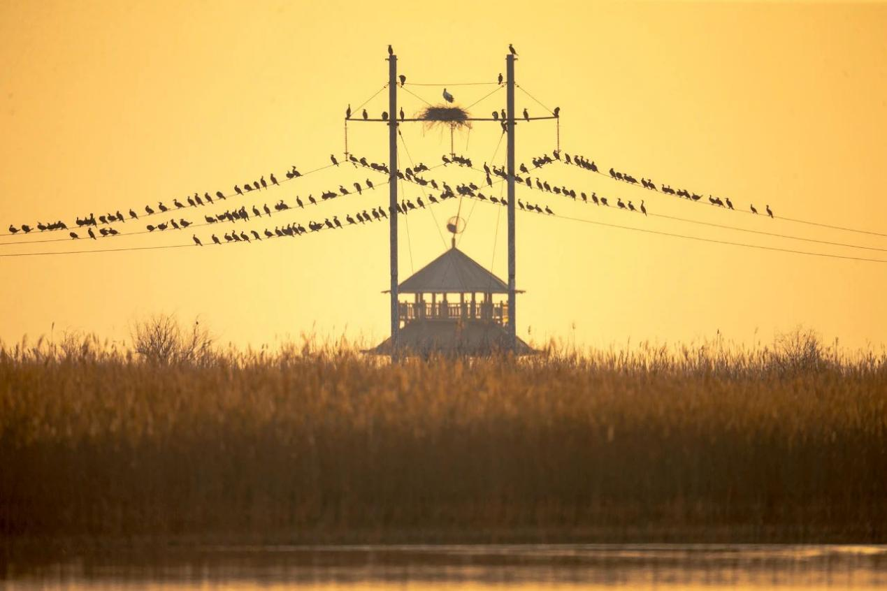

山东黄河三角洲国家自然保护区
Shandong Yellow River Delta national Nature reserve
山东黄河三角洲国家级自然保护区以保护新生湿地生态系统和珍稀濒危鸟类为主的湿地类型自然保护区。地处渤海之滨，东营市境内，新、老黄河入海口两侧，1992年经国务院批准建立的国家级自然保护区，设一千二、黄河口、大汶流三个管理站，总面积15.3万公顷，其中陆地面积 82700公顷，潮间带面积38250公顷，低潮时负3米浅海面积32050公顷。
野鸭湖湿地是北京地区鸟类的重要栖息地和华北地区迁徙鸟类重要的中转站。多年来，野鸭湖不断加强栖息地恢复、禽流感监控、日常巡护和鸟类救护工作力度。2009年，野鸭湖建立了远程无线高清监控系统，实现对主要鸟类栖息地的全方位监控，进一步提升了鸟类监测保护工作的整体能力和水平。2013年10月24日，在第三届中国湿地文化节暨东营国际湿地保护交流会议上，国际湿地公约组织负责人宣布，经国际湿地公约组织最新确定，包括山东黄河三角洲国家级自然保护区在内，中国的五个国家级自然保护区被正式列入国际重要湿地名录。2023年11月30日，国家林业和草原局公布《陆生野生动物重要栖息地名录（第一批）》，山东东营黄河三角洲候鸟重要栖息地入选。
